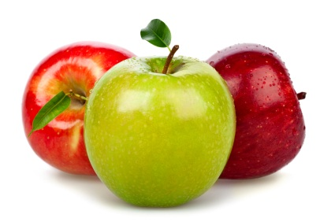
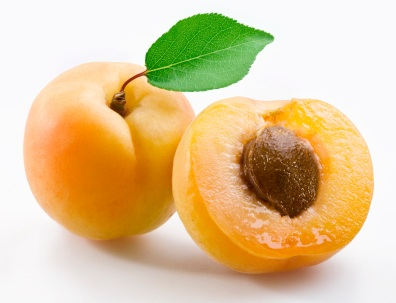
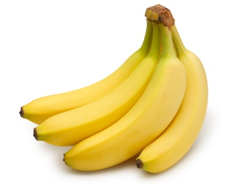
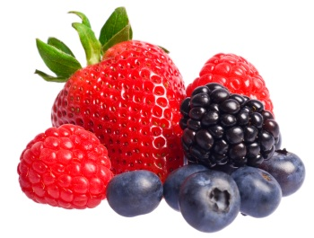
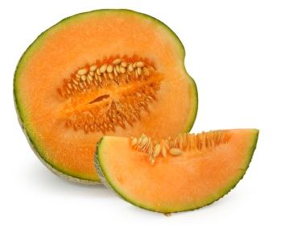
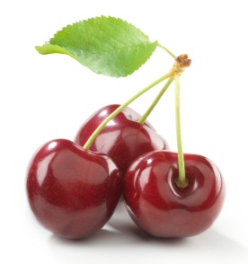
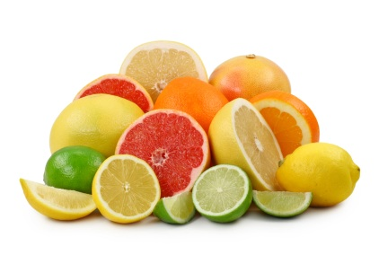
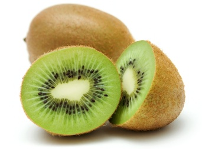
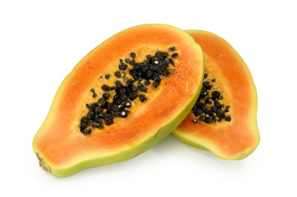
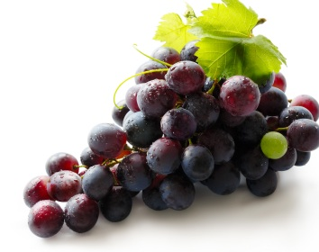

Top 10 Healthiest Fruit List with Fruit Benefits

This healthiest fruit list shows the most nutritious antioxidant fruit benefits.
You'll want to choose often from the healthiest fruit list in order to get the best fruit benefits. Then you can look better, think better and have more abundant energy.
But that's not all. It turns out that an apple a day (or an apricot, grapefruit, kiwi, papaya or bowl of blueberries) CAN keep the doctor away!
Besides being delicious and nutritious, by reducing your risk of colds, flu, heart disease, stroke and cancer, eating the healthiest fruits with the most antioxidant fruit benefits will help you to feel better and live longer.
The Healthiest Fruit with Antioxidant Fruit Benefits
-

- Apples, with the skin, provide pectin, 5 grams of fiber and a heaping dose of flavonoid antioxidants. Apple fiber helps lower cholesterol and keep you regular. And the powerful flavonoids reduce your risk of heart disease, stroke and cancer. A medium apple has about 80 calories.
- Abricots are a good source of vitamins A, C and E, potassium, iron andApricots with leaves on a white background. carotenoids. The lycopene found in apricots helps protect your eyes and prevent heart disease, LDL cholesterol oxidation and certain cancers – especially skin cancer. And the fiber in apricots helps relieve constipation. Plus 1 apricot has only 19 calories.
- Bananas are a great source of potassium (about 400 mg), which helps lower your risk of high blood pressure and stroke and plays a key role in muscle function. Bananas are delicious and sweet to eat, making them a good sugar substitute and natural energy source. The fiber in bananas helps restore normal bowel action. A medium size banana has around 108 calories.
- Berries are super high in powerful antioxidants, including vitamin C. Numerous studies show berries offer great protection against heart disease stroke, cancer and many other diseases.
- Blueberries top the antioxidant fruit benefits list. Besides other health benefits, blueberries help prevent high blood pressure, macular degeneration and brain damage leading to Alzheimer's disease. 1 cup of blueberries has 81 calories and 4 grams of fiber.
- Blackberries – a single cup of blackberries has 74 calories and a whopping 10 grams of fiber.
- Raspberries – there are 60 calories in 1 cup of raspberries with 8 grams of fiber.
- Strawberries – 1 cup of sliced strawberries has 50 calories and 4 grams of fiber.
- Cantaloupes are packed with Vitamin C, potassium and carotenoid antioxidants. Cantaloupe can help reduce inflammation, prevent cancer and cardiovascular disease, boost immunity and help protect your skin from sunburn. Half a melon has 97 calories and 2 grams of fiber.
- Cherries are very high in iron and disease-fighting flavonoids. They also have potassium, magnesium, C and E, folate and heart-protective carotenoids. Cherries can significantly reduce inflammation, arthritic pain, bad cholesterol and cancer risk. 1 cup of cherries has 88 calories.
- Citrus Fruits are best known for flavor, juiciness and high vitamin C content. But they're also a good source of folate, fiber and other antioxidants, vitamins and minerals. Citrus fruit has been shown to help reduce cholesterol, blood pressure and the risk of some types of cancer.
- Pink or Red Grapefruit – half a grapefruit has just a scant 47 calories.
- Oranges provide an impressive 50 to 70 mg of vitamin C and a medium orange has only 68 calories.
- Lemons and Limes – 1 lime or small lemon has about 17 calories.
- Kiwifruit, when compared ounce for ounce, has more than twice the vitamin C of an orange. It's also an excellent source of magnesium, potassium and vitamins A and E. Kiwis have been shown to boost the immune system and reduce respiratory diseases. 1 medium kiwi has 47 calories and 3 grams of fiber.
- Papayas are loaded with vitamin C, folate, carotenoids and natural digestive enzymes that help with protein digestion. 1 cup of cubed papaya has 55 calories.
- Red Grapes contain iron, potassium,grapes fiber and an abundance of powerful disease-fighting antioxidants. Although red wine gets most of the publicity, dark colored grapes are the original source of the flavonoids, anthocyanins and resveratrol, which have been shown to help prevent heart disease and cancer. 1 cup of red or purple grapes has 60 calories.








